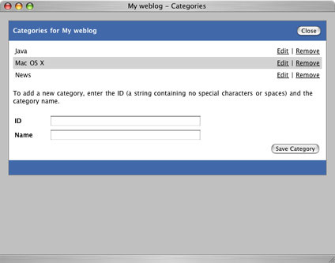

@header@

<table width="100%" cellspacing="0" cellpadding="8" class="item">
  <tr class="itemHeader">
    <td>
      Categories
    </td>
  </tr>
  <tr class="itemBody">
    <td>
      <p>
      Each blog entry can be organized into one or more categories. To edit the categories defined for your blog, click the <b>Categories</b> link after logging in. This will open a window in which you can edit the categories.
      </p>

      <p>
      </p>

      <p>
      To add a new category, just fill out the form and click the <b>Save Category</b> button.
      </p>

      <p>
      To edit a category once it has been added, click the <b>Edit</b> link next to the appropriate category.
      </p>

      <p>
      To remove a category, click the <b>Remove</b> link and click OK when prompted for confirmation.
      </p>
    </td>
  </tr>
</table>

@footer@